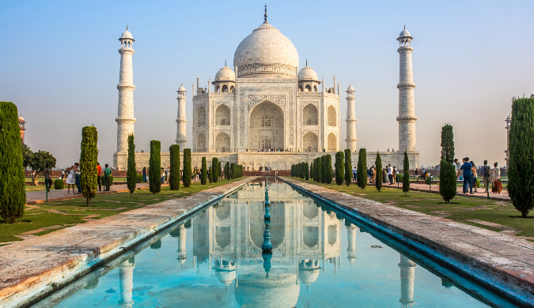

- Culture: India is a diverse and culturally rich country with
a history spanning thousands of years.
It is known for its cultural tapestry,
which includes classical dance, music, art, and literature.
The traditional greeting is often the namaste,
a gesture of respect with folded hands.
- Customs: Respect for elders is deeply ingrained in Indian
customs, and various rituals and ceremonies often center around family and community.
Weddings are elaborate affairs, marked by colorful ceremonies and rituals.
- Food: Indian cuisine is renowned globally for its use of diverse spices and flavors.
Staple foods include rice and a variety of bread (roti, naan).
Popular dishes include biryani, curry, dosa, samosa, and the array of sweets
like gulab jamun and jalebi.
- Festivals: India celebrates a multitude of festivals reflecting its
cultural and religious diversity. Diwali, Holi, Eid, Navratri,
and Pongal are some of the major festivals celebrated with enthusiasm,
often involving music, dance, and feasts.
- Religious Diversity: India is home to several major religions,
including Hinduism, Islam, Christianity, Sikhism, Buddhism, and Jainism.
This diversity contributes to a rich tapestry of festivals, traditions,
and religious practices.
- Clothing Diversity: Traditional clothing varies across regions.
The saree for women and dhoti or kurta-pajama for men are common, but styles differ.
Western attire is also widely accepted, especially in urban areas.
|
 |